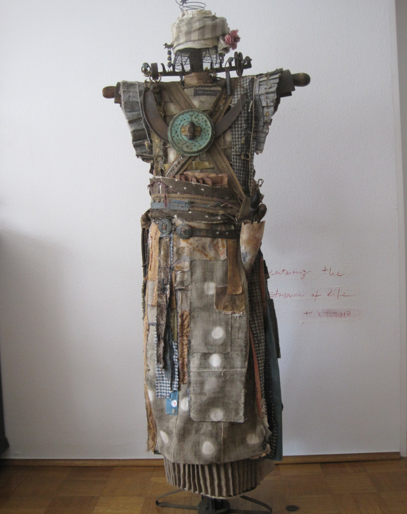
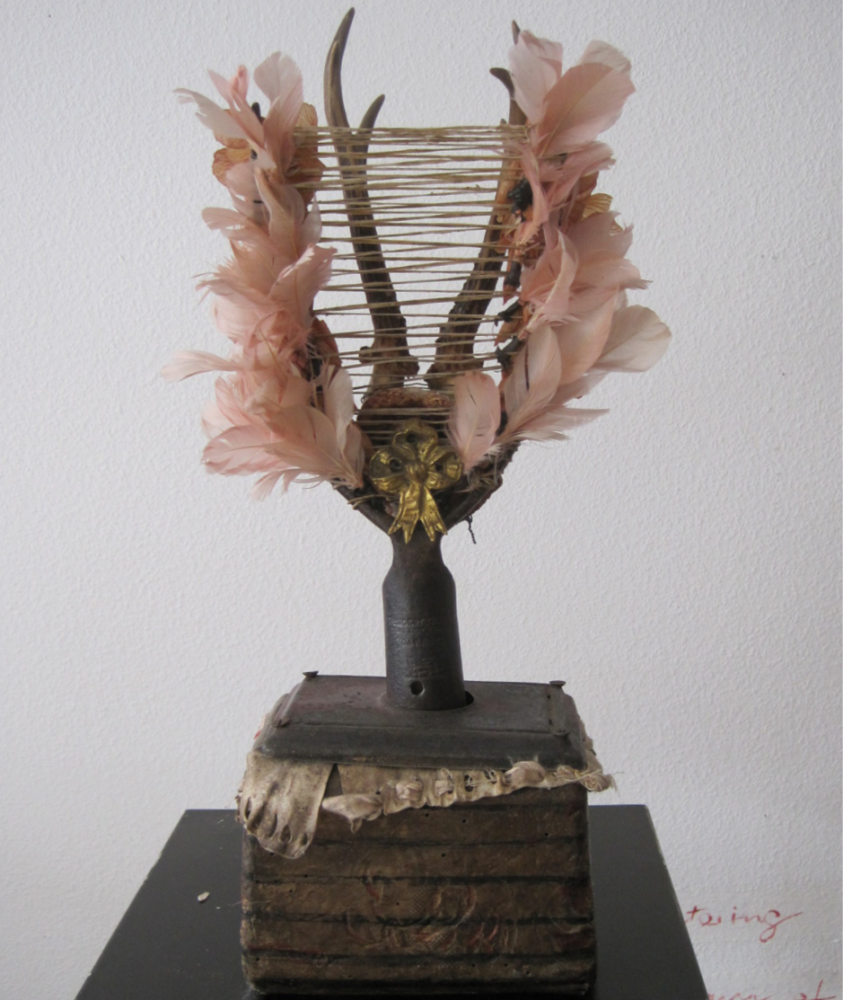

Seit mehr als 20 Jahren bin ich leiden- schaftlicher Sammler gebrauchter Materialien. Stoff, Metall, Holz —Zerschlissen, Verrostet.Sie sind der Stoff für diese Skulpturen. Verwandlung von Altem in Neues.
Mitte der sechziger Jahre gab es diese meist schmuddeligen Lagerhäuser mit Trödel. Von da an erfuhr meine Sammelleidenschaft einen entscheidenden Schub. Die Faszination, die von diesen teilweise verrotteten Materialien,ergilbten, verschlissenen Stoffen, verrosteten Nägeln und Draht ausging, setzte in mir eine ungeheure Phantasie frei, ich begann mit ihnen zu spielen, zu experimen-tieren und es entstanden Wandbehänge. Glück-licherweise entdeckte die Galeristin HelgaMalten meine Arbeiten und war begeistert.Wir arbeiteten über ein paar Jahre erfolg-reich zusammen.
Nelly Serie
Ein Augenblick zwischen Alltag
und Phantasie. Vergessen, verloren,
Schätze schlummern im verborgenen.


Kopf Serie
Häupt Linge erschaffen als Nellys
kleine Gefährten. Vielfalt, Spannung und
Anmut – vereint.